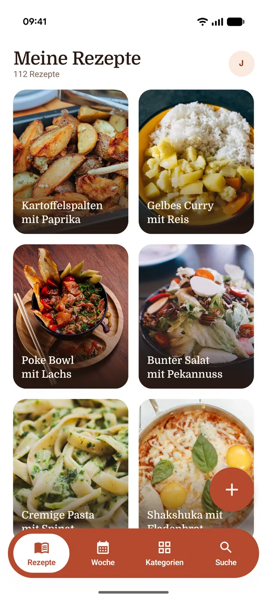

A reel becomes a recipe
You see something on TikTok or Instagram you want to cook, and you share the link with Kochbuch. Back comes a recipe: ingredients, steps, picture. Nothing to type out, nothing to scrub back.
The Android version is in preparation, the iPhone version is being built alongside it.

This caption becomes this recipe
In a caption the quantities sit mid-sentence, between emoji and hashtags, and half the method is only ever spoken in the video. Kochbuch reads both, sorts ingredients from steps and translates what is in German or Italian.
🍋 CREAMY LEMON PASTA ✨ the fastest dinner of the week, promise!! ingredients for 2: 250g linguine, 200g spinach (fresh!), 1 lemon, 150g cream cheese, 2 cloves of garlic, 40g parmesan, olive oil, salt & pepper everything else in the video 👆 don't forget to save #pasta #lemonpasta #weeknightdinner #recipes
Ingredients
- For the sauce
- 150 g cream cheese
- 1 lemon, zest and juice
- 2 cloves of garlic
- 40 g parmesan
- Alongside
- 250 g linguine
- 200 g spinach, fresh
- 2 tbsp olive oil
Method
- 1Cook the linguine until al dente, keep a cup of the cooking water.
- 2Sweat the garlic in olive oil, add the spinach and let it wilt.
- 3Stir in cream cheese, lemon zest and juice, loosen with cooking water.
- 4Fold in the pasta, season with parmesan, salt and pepper.
The caption above is made up; real posts belong to their authors. What Kochbuch makes of them sits in your cookbook and nowhere else.
What gets cooked this week
One tap puts a recipe into the week, and from the list you can add five at once. When the two of you cannot agree, the app rolls the week for you. Categories nobody fancies right now you leave out beforehand.
- Linked cookbooks plan the same week.
- Whose plan you see, you set per cookbook.

While you cook, the screen stays on
In cook mode one step fills the screen, you tick off ingredients as you read them, and the display stays awake. Put the phone down for a while and you come back to the same step.
- “For the sauce” stays a heading and never becomes an ingredient.
- Half an hour later you are still on the right step.

One cookbook, two people
A six-character code links two cookbooks. After that you both see both collections and plan the same week. Each of you can only change your own recipes, and favourites stay private.
- The code lasts seven days and can be redeemed once.
- You can unlink at any time; nobody loses a recipe.

The first 15 recipes are on us
They don't expire, so you can save them up. After that you need a subscription to keep pulling in recipes: every import costs us computing time, and nobody else is paying for it.
All prices include VAT. The subscription renews automatically and can be cancelled any time through the App Store or Google Play. The final price is the one shown in the store's purchase dialog.
What stays without a subscription
- Every recipe already saved: read it, cook it, edit it.
- Weekly plan, cook mode, favourites and shared cookbooks.
- Your account, and the way to delete it again with two taps.
Privacy and legal
Which data ends up where, what the subscription says and how to delete your account. All readable here, without the app.
Write to us
Questions, bugs and wishes are answered by the person who built the app.
info@juicyslaedle.de